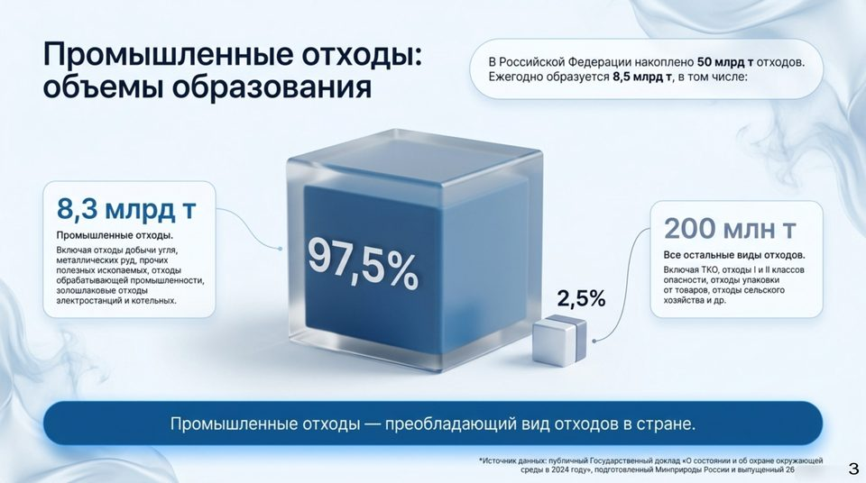
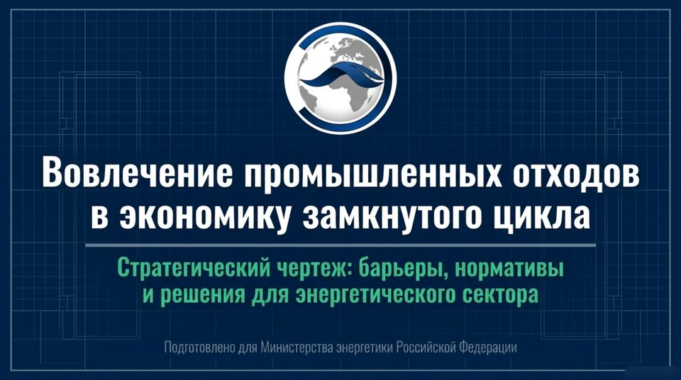
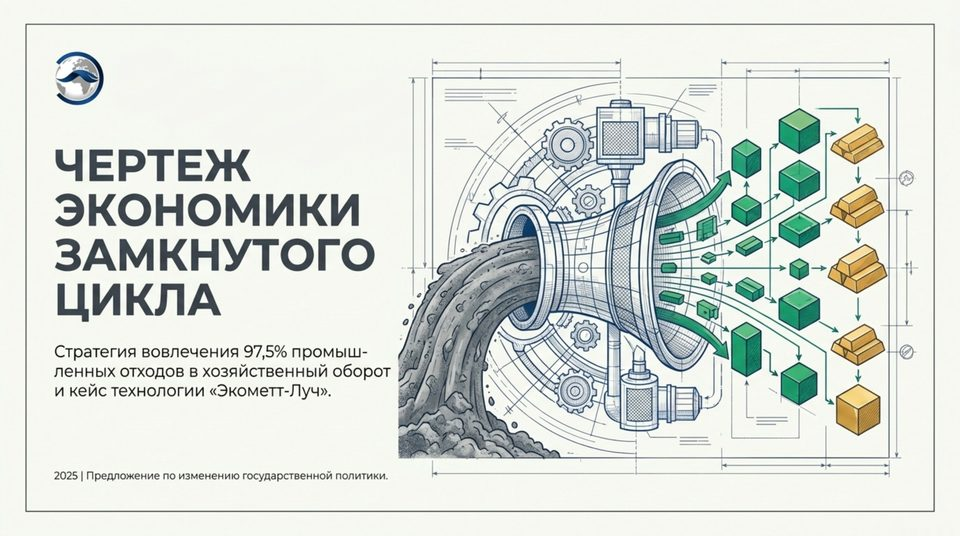
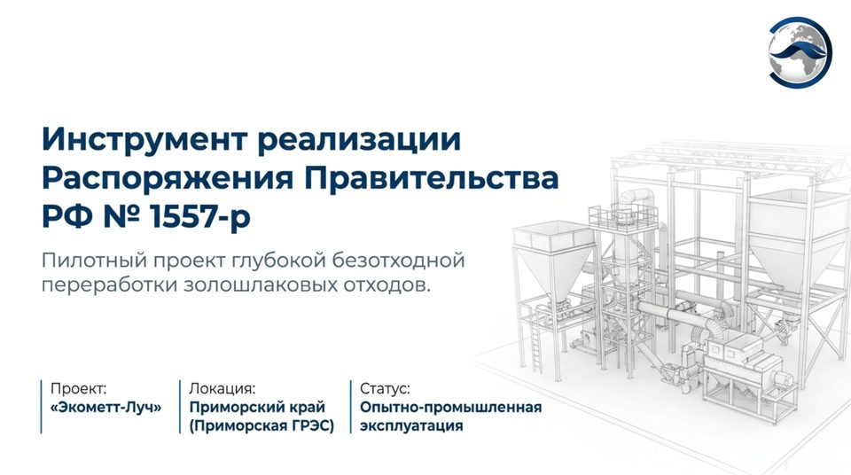
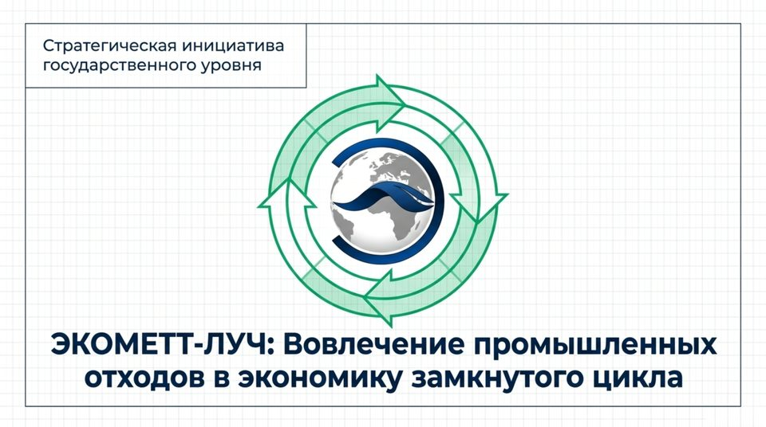

Модель экономики замкнутого цикла Экометт-Луч20.09.2026
Вовлечение промышленных отходов в экономику замкнутого цикла17.09.2026
Чертёж экономики замкнутого цикла17.09.2026
Инструмент реализации РП РФ № 1557-р17.09.2026
ЭКОМЕТТ-ЛУЧ: вовлечение отходов в ЭЗЦ17.09.2026| Дата | Ведомство | Источник | Материал | Молекулярный вес события |
|---|
| Источник | Статус | Материалов / ошибка |
|---|---|---|
| ИНФРАГРИН — главная лента | ОШИБКА | HTTPSConnectionPool(host='infragreen.ru', port=443): Read timed out. ( |
| ИНФРАГРИН — Циркулярность | ОШИБКА | HTTPSConnectionPool(host='infragreen.ru', port=443): Read timed out. ( |
| ИНФРАГРИН — Оценка/рейтинги | ОШИБКА | HTTPSConnectionPool(host='infragreen.ru', port=443): Read timed out. ( |
| ИНФРАГРИН — ESG-финансы/инвестиции | ОШИБКА | HTTPSConnectionPool(host='infragreen.ru', port=443): Read timed out. ( |
| ИНФРАГРИН — Технологии | ОШИБКА | HTTPSConnectionPool(host='infragreen.ru', port=443): Read timed out. ( |
| ИНФРАГРИН — Территории (география) | ОШИБКА | HTTPSConnectionPool(host='infragreen.ru', port=443): Read timed out. ( |
| ИНФРАГРИН — Регулирование | ОШИБКА | HTTPSConnectionPool(host='infragreen.ru', port=443): Read timed out. ( |
| Ведомости — Промышленность | ОШИБКА | HTTPSConnectionPool(host='www.vedomosti.ru', port=443): Read timed out |
| Ведомости — ТЭК | ОШИБКА | HTTPSConnectionPool(host='www.vedomosti.ru', port=443): Read timed out |
| Ведомости — Госинвестиции и проекты | ОШИБКА | HTTPSConnectionPool(host='www.vedomosti.ru', port=443): Read timed out |
| Ведомости — Наукоемкие технологии | ОШИБКА | HTTPSConnectionPool(host='www.vedomosti.ru', port=443): Read timed out |
| Recycling Product News — Circular Economy | ОШИБКА | HTTPSConnectionPool(host='www.recyclingproductnews.com', port=443): Re |
| Recycling Product News — Metals | ОШИБКА | HTTPSConnectionPool(host='www.recyclingproductnews.com', port=443): Re |
| Recycling Product News — Plastics | ОШИБКА | HTTPSConnectionPool(host='www.recyclingproductnews.com', port=443): Re |
| Recycling Product News — Industry News | ОШИБКА | HTTPSConnectionPool(host='www.recyclingproductnews.com', port=443): Re |
| Правительство России — Документы (решения, распоряжения) | OK | 20 |
| Правительство России — По министерствам и ведомствам | OK | 20 |
| Правительство России — Законопроектная деятельность | OK | 20 |
| РЭО (Российский экологический оператор, офиц.) | ОШИБКА | HTTPSConnectionPool(host='t.me', port=443): Read timed out. (read time |
| Устойчивое Развитие - ESG - экология | ОШИБКА | HTTPSConnectionPool(host='t.me', port=443): Read timed out. (read time |
| ИНФРАГРИН (Telegram) | ОШИБКА | HTTPSConnectionPool(host='t.me', port=443): Read timed out. (read time |
| Google News: экономика замкнутого цикла | ОШИБКА | HTTPSConnectionPool(host='news.google.com', port=443): Read timed out. |
| Google News: инвестиции в переработку отходов | ОШИБКА | HTTPSConnectionPool(host='news.google.com', port=443): Read timed out. |
| Google News: рейтинг циркулярной экономики | ОШИБКА | HTTPSConnectionPool(host='news.google.com', port=443): Read timed out. |
| Google News: circular economy investment | ОШИБКА | HTTPSConnectionPool(host='news.google.com', port=443): Read timed out. |
| Google News: circular economy technology | ОШИБКА | HTTPSConnectionPool(host='news.google.com', port=443): Read timed out. |
| Google News: золошлаковые отходы утилизация | ОШИБКА | HTTPSConnectionPool(host='news.google.com', port=443): Read timed out. |
| Google News: промышленные отходы вторичное сырье | ОШИБКА | HTTPSConnectionPool(host='news.google.com', port=443): Read timed out. |
| Google News: техногенные месторождения | ОШИБКА | HTTPSConnectionPool(host='news.google.com', port=443): Read timed out. |
| Google News: РОП для промышленности | ОШИБКА | HTTPSConnectionPool(host='news.google.com', port=443): Read timed out. |
| Дата | Акт | Суть |
|---|---|---|
| 24.06.1998 | 89-ФЗ «Об отходах производства и потребления» | Базовый закон отрасли — правовые основы обращения с отходами |
| 29.12.2014 | 458-ФЗ (поправки к 89-ФЗ) | Введена расширенная ответственность производителей (РОП), экологический сбор |
| 15.06.2022 | РП №1557-р — Комплексный план по повышению объёмов утилизации ЗШО V класса опасности | Программа утилизации ЗШО на сайте Правительства: цель 15% к 2024 г., 50% к 2035 г.; куратор — Минэнерго |
| 04.08.2023 | 451-ФЗ (поправки к 89-ФЗ) | Реформа РОП: реестр утилизаторов, экосбор, банковские гарантии для импортёров |
| 28.08.2024 | РП №2330-р — перечни продукции с обязательной долей вторсырья | Включает цемент с золой-уносом (от 6% вторсырья); действует с 01.01.2025 |
| — | Презентация пилотного проекта «Экомет-Луч» (Приморский край) | Опубликована на муниципальном портале (gosuslugi.ru), представлена на экологическом комитете «Опоры России» |